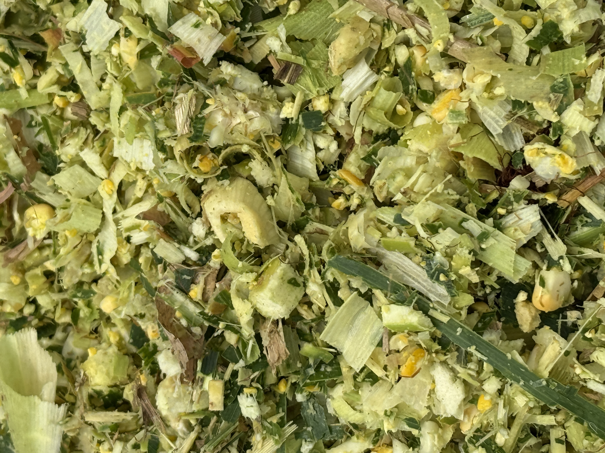

সাইলেজ তৈরি ও সংরক্ষণের নিয়ম যেমন গুরুত্বপূর্ণ, তেমনি খামারে গরুকে সঠিকভাবে অভ্যস্ত করানোও সমান জরুরি। নতুন খাবার হিসেবে প্রথম কয়েকদিন বিশেষ নজর দিন।
খামারভেস্ট সাইলেজ প্রথমবার খাওয়ালে নিচের ৫টি ধাপ মেনে চলুন — গরু দ্রুত মানিয়ে নেবে এবং অপচয়ও কমবে।
জরুরি সতর্কতা
গরুকে কখনোই হঠাৎ একবারে পুরো রেশনে সাইলেজ দেবেন না। পচা বা ছত্রাকযুক্ত অংশ বাদ দিয়ে সর্বদা তাজা ও সুগন্ধি সাইলেজ পরিবেশন করুন।
প্রথমবার খাওয়ানোর ৫টি জরুরি ধাপ
- ১. অল্প দিয়ে শুরু করুন নতুন কোনো খাদ্যে গরুর রুচি ও পাকস্থলী মানিয়ে নিতে সময় লাগে। প্রথম কয়েক দিন অল্প সাইলেজ দিন এবং আগের পরিচিত খাদ্য একেবারে বন্ধ করবেন না। গরু স্বাভাবিকভাবে খাচ্ছে কি না, জাবর কাটছে কি না এবং গোবরের পরিবর্তন হচ্ছে কি না খেয়াল করুন। সব ঠিক থাকলে ধীরে ধীরে পরিমাণ বাড়ান।
- ২. সাইলেজ একা সম্পূর্ণ রেশন নয় সাইলেজ মূলত রাফেজ বা আঁশযুক্ত খাদ্যের অংশ। গরুর বয়স, ওজন, দুধ দেওয়া বা মোটাতাজাকরণের অবস্থা অনুযায়ী খড়, ঘাস, দানাদার খাদ্য, মিনারেল ও পরিষ্কার পানির ভারসাম্য দরকার। তাই সবার জন্য একই কেজির পরামর্শ ঠিক নয়। বিশেষ করে দুধের গাভী, বাছুর, গর্ভবতী বা অসুস্থ প্রাণীর রেশন স্থানীয় প্রাণিসম্পদ কর্মকর্তা বা যোগ্য পুষ্টিবিদের সঙ্গে মিলিয়ে নিন।
- ৩. খোলার পর প্রতিদিন শুধু প্রয়োজনীয় অংশ নিন বস্তা খোলার পর বাতাস লাগলে সাইলেজের মান দ্রুত বদলাতে পারে। প্রয়োজনমতো বের করে বাকি অংশের মুখ ভালো করে বন্ধ করুন এবং ছায়া ও শুকনা জায়গায় রাখুন। গরম হয়ে যাওয়া, ছত্রাক, পচা বা অস্বাভাবিক দুর্গন্ধযুক্ত অংশ আলাদা করে ফেলুন। এটি খাওয়াবেন না।
- ৪. চোখ, নাক ও হাতে প্রাথমিক পরীক্ষা করুন ভালো সাইলেজে সাধারণত টক-ফার্মেন্টেড সুগন্ধ থাকে; পচা, বাসি বা তীব্র অ্যালকোহলের গন্ধ সতর্কতার সংকেত হতে পারে। দৃশ্যমান ছত্রাক, খুব গরম অনুভূতি বা অস্বাভাবিক রং থাকলে ব্যবহার বন্ধ রাখুন। সন্দেহ হলে নমুনা পরীক্ষা করানোই সবচেয়ে নির্ভরযোগ্য উপায়।
- ৫. পানি, খাওয়ার জায়গা ও রেকর্ড ঠিক রাখুন পরিষ্কার পানি সবসময় রাখুন। প্রতিদিন কতটুকু দিলেন, গরু কতটুকু খেল এবং দুধ বা ওজনে কী পরিবর্তন হলো, ছোট একটি খাতায় লিখে রাখুন। এতে কোন রেশন আপনার খামারে কাজ করছে তা বোঝা সহজ হয় এবং অপচয়ও কমে।
কখন দ্রুত পরামর্শ নেবেন?
খাবার কম খাওয়া, পাতলা গোবর, পেট ফাঁপা, দুধ কমে যাওয়া, জ্বর বা আচরণে অস্বাভাবিকতা দেখা দিলে সাইলেজ দেওয়া কমিয়ে স্থানীয় পশুচিকিৎসকের সঙ্গে কথা বলুন। অনলাইনের সাধারণ গাইড চিকিৎসা বা ব্যক্তিগত রেশন পরামর্শের বিকল্প নয়।
সংক্ষেপে
- ✓খামারভেস্ট সাইলেজ সঠিকভাবে সংরক্ষণ করে ধাপে ধাপে শুরু করাই সবচেয়ে নিরাপদ।
- ✓ধীরে শুরু করুন এবং গরুকে সময় দিন।
- ✓নষ্ট ও ছত্রাকযুক্ত অংশ পুরোপুরি বাদ দিন।
- ✓সুষম রেশনের দিকে খেয়াল রাখুন।
- ✓প্রতিদিন গরুর আচরণ ও সুস্থতা পর্যবেক্ষণ করুন।
খামারভেস্ট Facebook পেজ
নিয়মিত সাইলেজ আপডেট, স্টক সংবাদ ও খামারি পরামর্শ পেতে ফেসবুকে লাইক দিয়ে যুক্ত থাকুন।